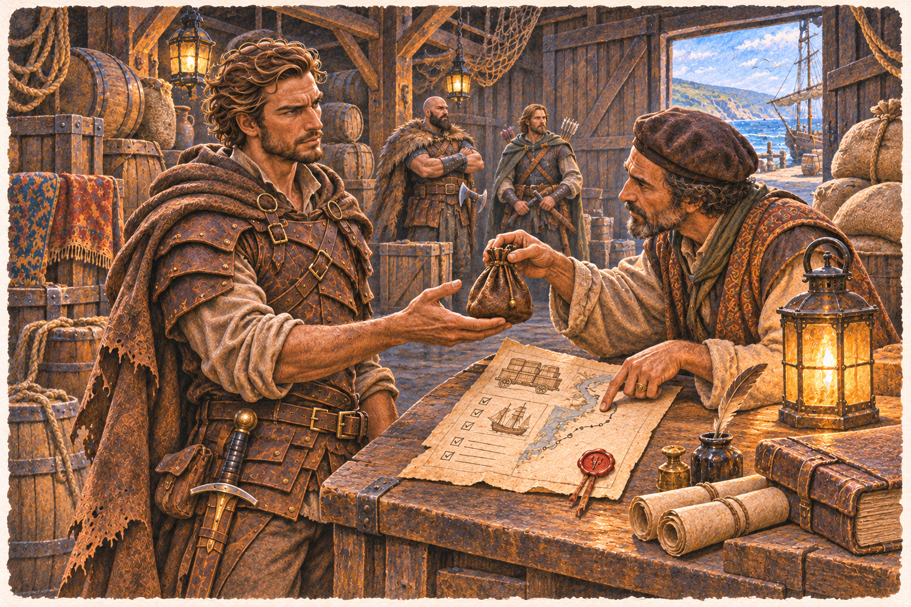
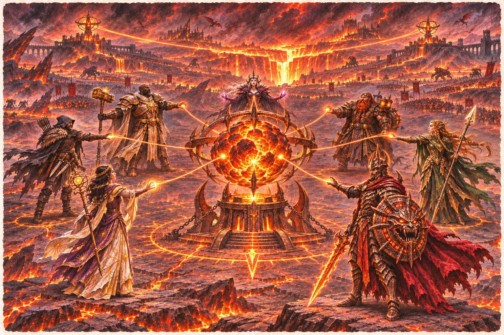
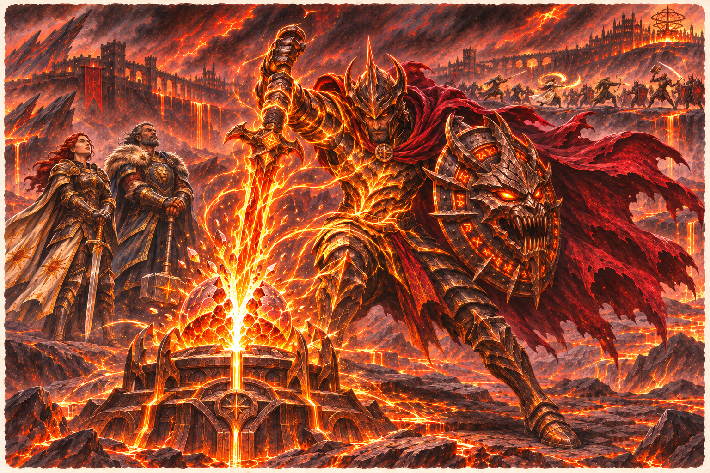
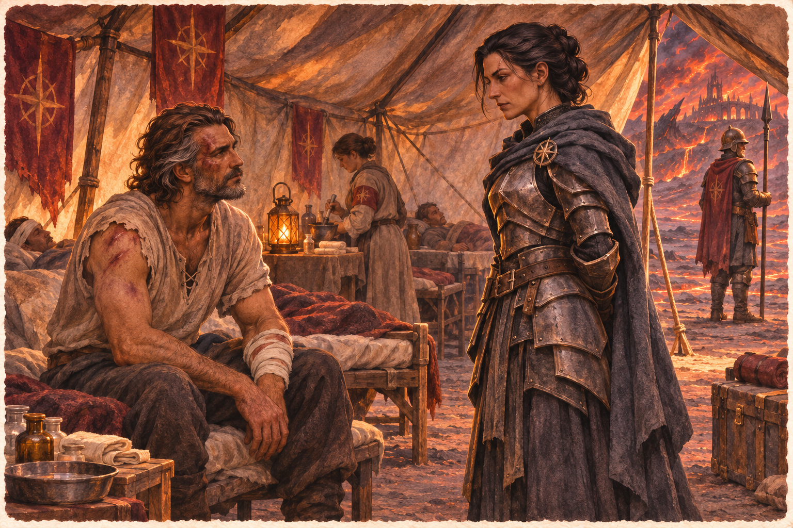
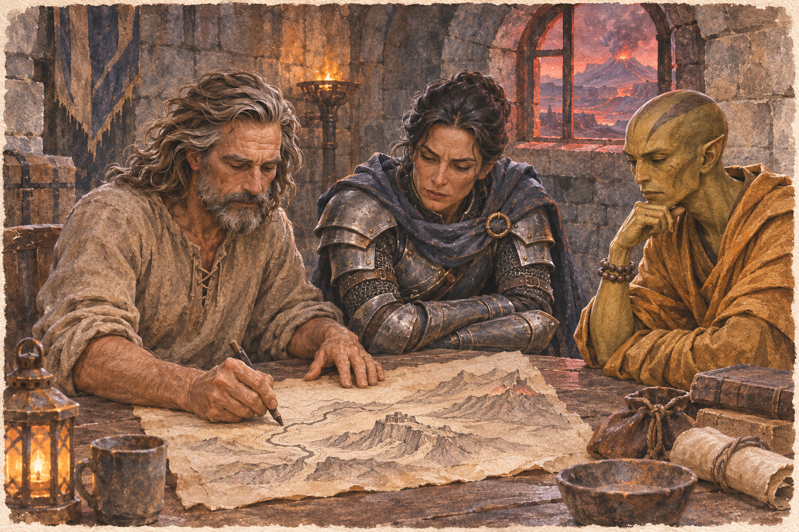
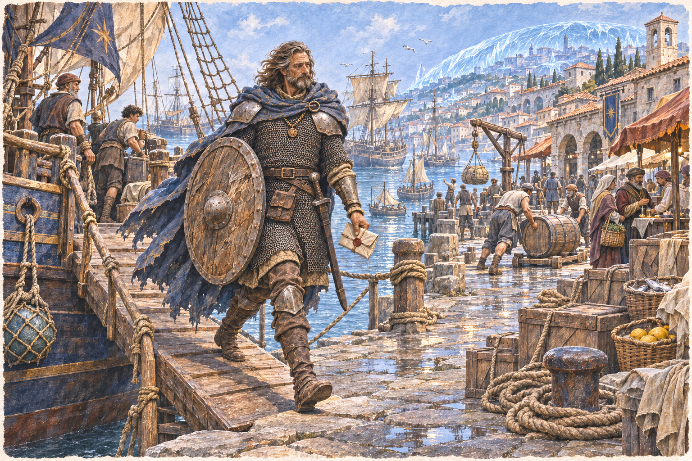

Do exílio ao culto
Quando Ulrich fala de Zadash, conta até a parte que mais lhe custa. Diz que era devoto de Erathis, que serviu à Coroa e que mandou executar quatro homens que recebera ordem de soltar. Faz questão de dizer a verdade sempre que consegue. Quando chega aos anos de escolta, escolhe as palavras com mais cuidado. Há nomes que evita pronunciar. Ninguém na Costa suspeitaria de alguns dos lugares por onde passou. Para conhecer Ulrich por inteiro, é preciso seguir com ele a partir do ponto em que costuma abreviar a história.
Por alguns anos, Ulrich ganhou a vida como mercenário na Costa da Menagerie. Escoltava cargas de um porto a outro e aceitava o próximo serviço quando o dinheiro começava a acabar. Certos contratantes pagavam bem e sempre voltavam com outra proposta. Ulrich só descobriu mais tarde que serviam ao culto de Asmodeus. A essa altura, já lhe confiavam rotas inteiras e punham homens sob seu comando. Aos poucos, soube também o que esperavam construir. Acreditavam, como ele, que a paz só duraria quando uma autoridade pudesse impor a mesma ordem em toda parte. Ali encontrou o propósito que lhe faltava desde a fuga. Entregou-se à causa de livre vontade, e Asmodeus lhe deu poder para levá-la adiante.

Passaram-se anos. Ulrich aprendeu a mover cargas e homens sem revelar o destino de nenhum dos dois, coordenou agentes na Costa e comandou missões fora do Plano Material. Para manter as rotas do culto, mandou incendiar casas de quem se recusava a ceder passagem, tomou reféns e fez desaparecer testemunhas. Quando Asmodeus escolheu os sete campeões que sustentariam o ritual para romper o Portão Divino, Ulrich estava entre eles. Antes de partir para Avernus, deixou instruções a um agente em Wildemount. Se a comunicação com os superiores fosse cortada, as peças seguiriam separadas por uma rota de reserva e só seriam reunidas no destino.
A Batalha da Fissura
Antes da batalha, um Desejo foi pronunciado longe de Ulrich. Ele jamais ouviu as palavras. Sabe apenas que, de vez em quando, uma pergunta lhe ocorria com uma clareza que o perturbava. Quando a paz chegasse, o que aconteceria com quem a recusasse? Durante anos, a resposta lhe parecera simples. Agora havia momentos em que ele chegava a pensar nas pessoas que teriam de viver sob aquela ordem. Ainda assim, seguiu para Avernus.
Quando os exércitos se encontraram junto à fissura, a batalha se abriu em duas frentes. Numa delas, a coalizão enfrentava Tharizdun. Na outra, as legiões de Asmodeus defendiam as estruturas que seus engenheiros haviam erguido ao redor do Portão. A Âncora da Subjugação impedia que a fissura se recompusesse. A da Convergência acumulava a energia necessária para alargá-la. A terceira, a Âncora da Vontade, dependia dos campeões reunidos ao redor de seu núcleo. Seus juramentos só sustentariam o ritual enquanto todos quisessem que o Portão caísse.

Quando o fluxo passou pelas três âncoras, Ulrich sentiu por um instante o que os outros campeões esperavam da vitória. Um já pensava nas cidades que tomaria. Outro esperava a queda da barreira para acertar contas com um aliado. Então Ulrich teve a visão. Viu exércitos atravessarem o Portão, viu deuses disputando cidades e viu Asmodeus exigir obediência dos sobreviventes. Lembrou-se do pátio da guarnição em Zadash e da certeza com que dera a ordem de execução. Ao fim da visão e de volta ao círculo, compreendeu o que ainda podia escolher.
Ulrich recuou. Do outro lado do núcleo, outros dois campeões baixaram as armas. O fluxo perdeu força. Os que continuavam leais tentaram sustentar o ritual, e a guarda se dividiu quando os campeões voltaram as armas uns contra os outros. Ulrich atravessou o círculo e golpeou o núcleo enquanto ainda estava ligado a ele. A energia acumulada percorreu esse vínculo e o atingiu antes que pudesse se afastar. Com a terceira âncora destruída, a coalizão tomou as posições infernais e impediu que o ritual fosse retomado. Na outra frente, Tharizdun foi derrotado. O Portão resistiu, e a fissura ficou aberta.

Encontraram Ulrich entre os destroços. Todo o poder que Asmodeus lhe dera havia desaparecido. Havia nomes que já não conseguia lembrar e rostos que via pela metade. Pela força da descarga, também sua vida deveria ter acabado ali. Ainda assim, quando os guardas se inclinaram sobre ele, sentiram sua respiração. Às vezes, Ulrich se pergunta se algum deus teve parte nisso. Em outras noites, a pergunta que lhe tira o sono é o que fazer com os anos que lhe restam.
Cinco anos sob custódia
A marechal Seressa Vhal tinha enterrado gente que Ulrich ajudara a matar. Sabia também que ele havia rompido o núcleo quando ainda podia defender a âncora. A ruptura lhe deu motivo para considerar que o antigo campeão fosse capaz de mudar. O que ele sabia sobre os agentes de Asmodeus podia ajudar a proteger a fissura, e mantê-lo sob guarda permitiria conferir o que contasse e observar se ainda obedecia ao antigo patrono. Seressa assumiu diante da Vigília a responsabilidade de mantê-lo vivo sob custódia.

Ulrich passou cinco anos no Bastião. Trabalhou na enfermaria, na cozinha e na horta, prestou depoimentos e conversou com Zereth sobre as escolhas que fizera antes e depois de conhecer Asmodeus. Em um dos depoimentos, contou que havia mandado levar um prisioneiro para uma vala e indicou onde ficava. A patrulha enviada ao local encontrou os corpos de dois combatentes desaparecidos. As famílias puderam enfim saber o que lhes acontecera, e Seressa viu que Ulrich estava disposto a contar até o que o comprometia. Aos poucos, Seressa pôde confiar em informações que Ulrich lhe entregava e que a Vigília conseguia verificar.

Quando voltou sob escolta ao local do ritual, Ulrich reconheceu entre os destroços o ponto onde estivera de guarda. Lembrou-se do orgulho com que defendera a âncora e sentiu nojo de si mesmo. Durante anos, Asmodeus alimentara suas certezas até que duvidar parecesse uma forma de deslealdade. Ulrich ficara tão cego que já mal conseguia imaginar a vida de quem sofria por suas ordens. Diante dos destroços, ainda se espantava por ter voltado a enxergar a tempo de agir. Teria sido obra de algum deus? Teria sido o destino? Ulrich guardava consigo a gratidão por aquele instante de clareza.
Ao longo daqueles anos, Ulrich voltou muitas vezes ao instante em que escolheu romper a âncora. Ao ver com clareza o que a queda do Portão custaria a quem teria de viver sob aquela ordem, conseguiu escolher o que fazer. Alguém havia tido de esperar para ver o que ele faria com a liberdade de escolher. Ele começou a se perguntar se teria a mesma paciência com alguém que já tivesse causado sofrimento. Talvez sua redenção pudesse começar ali, na liberdade de escolher o que faria dali em diante e na disposição de reparar o que ainda pudesse.
O que o espera em Porto Damali
Nemeia Sar reuniu registros de remessas despachadas depois da batalha. As caixas vinham declaradas como ferragens, mas as marcas correspondiam a peças que, reunidas, podiam conduzir energia para um ritual. Ulrich reconheceu a rota de reserva e o procedimento que ele próprio deixara em vigor. Ilyan Vey vinha observando pulsos na fissura semelhantes aos registrados durante os preparativos das âncoras. Seressa chamou Ulrich à sala de mapas. Precisava descobrir se alguém já estava montando ou testando um condutor. Como ele ainda sabia reconhecer as peças e o método de montagem, mesmo sem lembrar o nome do agente, ela lhe propôs que seguisse a carga em Porto Damali e prestasse contas à Vigília do que encontrasse.
Ulrich pediu um momento antes de responder. A rota que Seressa queria seguir ainda funcionava por causa de uma ordem sua. Aceitar a missão significava voltar à Costa e encarar as consequências dos crimes que cometera em nome de uma ideia equivocada de paz eterna. Viu ali uma oportunidade de proteger outras pessoas e dar a quem quisesse deixar o culto a chance de assumir o que fez. Sentiu uma convicção quase tão forte quanto a que o movera, anos antes, a fazer seu primeiro juramento. Disse a Seressa que iria. A disposição de tentar, mesmo diante de alguém de quem teria motivos para desconfiar, foi o começo do seu caminho de redenção.
Ao aceitar a missão, Ulrich sentiu um calor leve nas mãos. Em Porto Damali, tornou a senti-lo quando a dor de um carregador ferido cedeu sob seus dedos. Reconheceu algo sagrado naquele toque. Talvez um dia entendesse de onde vinha aquele poder ou por que sobrevivera em Avernus. Por ora, voltar a Wildemount lhe trazia um alívio que jamais imaginara sentir. Quando fugiu de Zadash, cada passo o levava para longe das consequências de uma ordem sua. Agora, a missão de Seressa o trazia de volta a Wildemount, a uma rota que ele mesmo ajudara a manter aberta. Ao pôr os pés no cais, sentiu o peso do que ainda teria de enfrentar. Mesmo assim, deu o primeiro passo.
